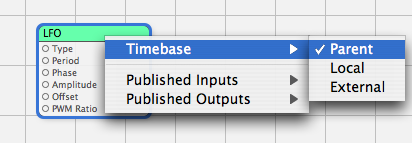

Q: What is the Timebase submenu available in the contextual menu of some patches in Quartz Composer?A: Some patches depend on time to produce their results (like LFO, Interpolation...), and some don't (like Mouse or Sprite). To know which ones depend on the time, control-click on them and in the contextual menu, you will have a "Timebase" submenu. Figure 1: The "Timebase" contextual menu for patches.  This submenu defines the timebase used by Quartz Composer when passing the time to the patch: "Parent" (default): the time is simply the same as the one passed to the parent macro patch - if all its parent patches have this setting, then the time will be the same as the global composition rendering time, "Local": the time passes at the same speed as the parent macro patch time, but is reset to 0 whenever the patch starts being used by the renderer patches it is connected to (i.e. when the renderer patches Enable inputs go from False to True), "External": this adds a new "Patch Time" input to the patch through which the time can be manually specified.
Document Revision History| Date | Notes |
|---|
| 2005-06-15 | Fixed grammar errors. | | 2005-06-01 | Describes the timebase system used by patches in Quartz Composer. |
Posted: 2005-06-15
|